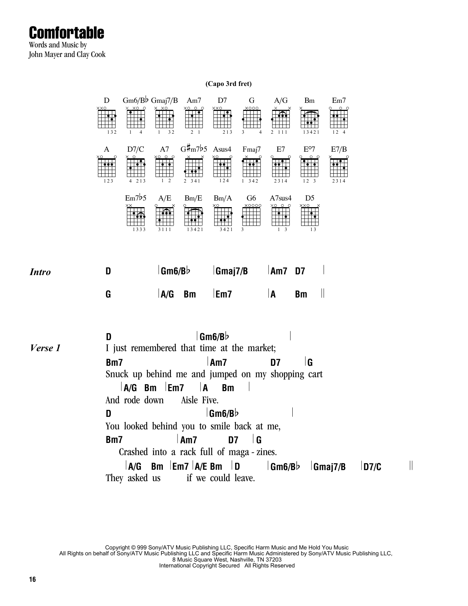

"Comfortable"
I just remembered, that time at the market
snuck up behind me and jumped on my shopping cart
And rode down, aisle 5
you looked behind you to smile back at me
crashed into a rack full of magazines
they asked us if we could leave.
Can't remember, what went wrong last September
Though I'm sure that you'd remind me, if you had to
Our love was, comfortable and
so broken in
I sleep with this new girl i'm still getting used to
my friends all approve, say she's gonna be good for you
they throw me, high fives
She says the bible is all that she reads
and prefers that I not use profanity
your mouth was, so dirty
Life of the party
and she swears that she's artsy
but you could distinguish
Miles from Coltrane
Our love was, comfortable and
so broken in
she's perfect, so flawless
or so they say, say
She thinks I can't see the smile that she's fakin'
and poses for pictures that aren't being taken
I loved you
grey sweat pants, no makeup, so perfect
Our love was, comfortable and
so broken in
she's perfect, so flawless
I'm not impressed, I want you back.